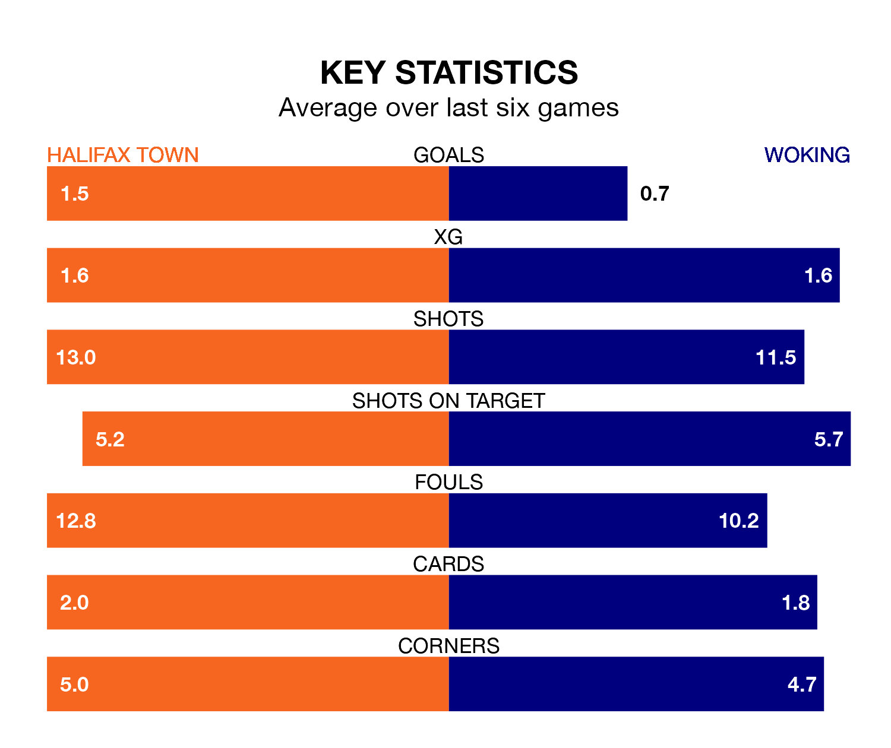

Woking travel to Halifax Town on Saturday in the National League.
The visitors come into the game on the back of a draw in their last match, having tied with Hartlepool United 1-1 at home, with a goal from Lewis Walker.
The Shaymen, meanwhile, won their last match, 2-1 against Maidenhead United, with their goals scored by Aaron Cosgrove and Adan George.
In the last 10 years, Halifax and Woking have played each other on 15 occasions. Halifax won six of them, Woking five, and they drew four times.
On average, the Shaymen scored 1.1 goals and the Cardinals 1.4 in those matches.
Their last meeting was on October 3, when Halifax won 2-1 away.
Woking are 21st in the table after 32 games, of which they have won nine and drawn seven, earning 34 points.
Halifax are 12 places ahead of the Cardinals in ninth, with 12 wins and 11 draws putting them on 47 points.
Town are in mixed form in the National League, with two wins and a draw from their last six games.
And also with two wins and a draw over that period, the away team's form is identical – they have both taken seven points from 18.
With 32 goals in 32 games so far this season, Woking are the league's second-lowest scorers with 1.0 goals per game. But they are conceding fewer than average too, letting in 40 goals at a rate of 1.2 per game.
The Shaymen are also below average scorers, with 1.2 goals per game, compared to a league average of 1.5. They have also conceded 1.2 goals per game.
Updated: 13:04 (UTC), 16/02/24